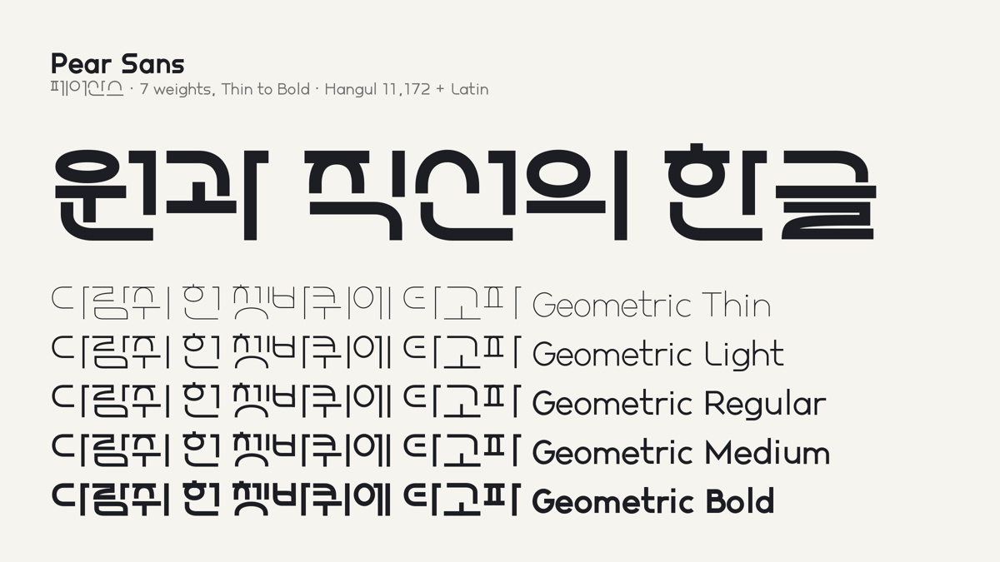

Pear Sans is a geometric Hangul sans serif in the spirit of the Bauhaus. Its skeleton is built from circles and straight lines, with handwriting and ornament stripped away, so each letter is drawn with the fewest strokes it needs and reads clearly.
It covers all 11,172 modern Hangul syllables and the Google Fonts Latin Core character set, in weights from Thin to Bold.

Pear Sans is designed by Heebae Lee of Pear Type Foundry. To contribute, see github.com/pearway/pear-sans.